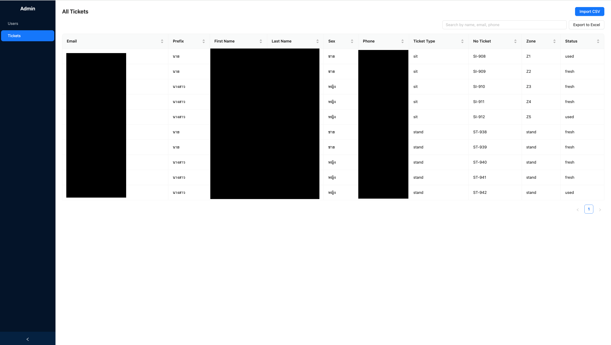
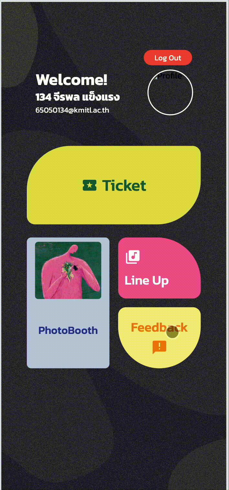

Introduction
I had the opportunity to support NitedKaset Festival at KMITL by developing and operating a web-based system for ticket management and attendee check-in.
Unlike typical academic projects, this system was used during a real live event, where hundreds of attendees needed to be processed quickly at the entrance. The goal was to build a lightweight and reliable platform that could help event staff manage tickets efficiently while ensuring a smooth entry experience for attendees.
This case study focuses not just on the technology, but on the operational lessons learned from running a live system in unpredictable real-world conditions.
Event Setup & Data Foundation
Before the event, the organizers provided ticket purchase data exported from their ticketing platform. This dataset formed the backbone of our verification system.
Ticket Data Structure
Field Purpose Example Attendee identification & verification user@example.com Phone Number Alternative verification method 081-xxx-xxxx Ticket Zone Seating/access area assignment A, B, C Ticket Type Ticket category Stand, Sit Admin Interface
The system includes a protected
/adminpath that requires staff authentication before access is granted. Once logged in an administrator can view imported ticket data, trigger CSV imports, and make manual edits directly within Firebase.
Progressive Web App (PWA) Decision
To simplify deployment and accessibility, the system was implemented as a Progressive Web App. This allowed staff to access the platform directly from a browser on laptops or mobile devices without installing any software.
✓ PWA Benefits
No installation required • Works offline • Fast load times • Mobile & desktop compatible • Easy updates without app store delays
System Architecture
The system was designed as a three-tier architecture to keep it lightweight, scalable, and responsive during peak check-in times.
Data Flow ArchitectureEvent Attendees / Staff ↓ Web Application (PWA) Vue.js + Tailwind CSS ↓ Firebase Cloud Database Real-time Ticket Verification ↑ CSV Ticket Data ImportThis lightweight architecture enabled instant access from any device with a web browser, which was crucial for rapid deployment at the event entrance.
Core System Features
The application was designed with multiple interconnected features to support both attendees and staff operations throughout the event.
🔐 Sign-in System
Secure authentication ensuring only authorized staff members could access operational tools like ticket verification and scanning.
🏠 Main Menu
Central navigation hub providing access to all event features, information, and tools for both attendees and staff.
🎵 Line-up Information
Schedule display showing performance times and activities, allowing attendees to plan their event experience effectively.
📸 Photobooth Feature
Interactive section providing attendees with photobooth information and supporting one of the event's key interactive activities.
🎫 Ticket System
Comprehensive database interface allowing verification of ticket information including email, phone, zone, and ticket type.
✅ Staff Scan Tool
Critical entrance feature enabling staff to search, scan, and verify tickets while checking in attendees efficiently.
Feedback Collection
Rather than building a custom feedback system, the team chose to integrate Google Forms for collecting event feedback. This strategic decision provided several operational advantages:
- Instant response collection without server overhead
- Automatic data aggregation in Google Sheets
- Quick analysis and reporting after the event
- Reduced development complexity during tight timelines
- Familiar interface for survey respondents
Data Management Workflow
Ticket data management followed a simple but effective import workflow that prepared the database before the event began.
1Ticket Sales Export
Event organizers exported ticket purchase data as CSV from their ticketing platform
2Admin Import Tool
System administrators uploaded the CSV file through the application's import interface
3Data Validation
System verified data integrity and format before processing
4Firebase Storage
Validated ticket data stored in Firebase for real-time access during check-in
Real-World Challenges
Operating a system in a real event environment revealed several unexpected challenges that no amount of lab testing could have predicted. These lessons became as valuable as the system itself.
In-App Browser Compatibility Issues
The Problem: Some attendees opened their ticket links through social media apps (Facebook, Instagram, WhatsApp) or messaging platforms. These links sometimes opened in in-app browsers, which caused compatibility issues with certain browser features used by the PWA.
The Impact: Staff had to manually assist attendees and verify tickets using alternative methods, creating bottlenecks at peak times.
The Lesson: Build systems that degrade gracefully. Always provide manual verification workflows as fallback options.
Email Account Mismatch
The Problem: Attendees often attempted to access tickets using different email accounts from their registration. For example, a user might purchase a ticket with a work email but open it from a personal email account on their phone.
The Impact: The system couldn't find ticket records, requiring staff to manually verify attendee information using phone numbers, ticket zones, or other identifying details.
The Lesson: Design verification systems with multiple lookup methods. Never rely on a single identifier (email) for validation.
On-Site System Monitoring
The Solution: Because of these unexpected situations, the team needed to actively monitor the system during the event. This included:
- Assisting staff with real-time ticket verification
- Resolving mismatched attendee information
- Manually searching ticket records when automated lookup failed
- Monitoring system performance and database response times
- Providing immediate support to minimize entrance delays
Real-time monitoring and human intervention prevented minor technical issues from becoming entrance bottlenecks.
Technology Stack
The system was built using modern web development technologies chosen for their balance of simplicity, performance, and rapid development capability.
Vue.js 3Tailwind CSSFirebase (Realtime DB)Progressive Web AppGoogle FormsCSV ImportTechnology Rationale
Technology Purpose Why Chosen Vue.js Frontend framework Fast development, reactive components, excellent mobile support Tailwind CSS Utility-based styling Rapid UI development, consistent design, mobile-responsive by default Firebase Backend & database Real-time sync, no server management, instant scalability, built-in security PWA App deployment Works offline, no installation, instant deployment, works on any device UI Preview & Assets
Below are animated snippets of the core user interfaces used by staff during the event. Each GIF loops automatically to demonstrate interaction flows.



Behind the Scenes
During the NitedKaset Festival, the team worked directly at the event entrance to monitor the system and assist with check-in operations. These operational moments captured the real-world environment where the system was tested under live conditions.
📸 Event Photos & Check-in Operations
Images from NitedKaset Festival entrance operations
What made this experience valuable was seeing firsthand how real users interact with systems. Attendees didn't use the platform exactly as we expected, and staff found creative workarounds to operational challenges. These real-world interactions shaped our understanding far more than any specification document could have.
Key Learnings
- Real systems must handle unexpected user behavior — No amount of testing can predict how real users will interact with your system
- Monitoring is essential during live deployments — Technical excellence alone isn't enough; human operational oversight is critical
- Simple solutions are often the most reliable — The PWA approach and Google Forms integration succeeded precisely because they were straightforward
- Operational decisions matter as much as technical implementation — The decision to have staff present and monitoring was as important as the code
- Build graceful degradation into your systems — Always provide fallback methods when primary features fail
- Design with multiple verification paths — Never assume users will interact with your system the way you designed it
Conclusion
Supporting NitedKaset Festival with this check-in system was invaluable real-world experience that transcended typical academic projects. Even though the platform itself was relatively lightweight from a technical standpoint, deploying it in a live event environment revealed many operational challenges that cannot be easily simulated during development.
The experience highlighted a fundamental lesson in software engineering:
Software does not end at deployment — real-world usage always introduces unexpected situations. Learning how to respond to those situations is an essential part of building reliable systems.
This project proved that the most important skill in software development isn't writing code— it's understanding how systems behave when they encounter real users in real conditions. That understanding can only come from hands-on experience and a willingness to adapt.